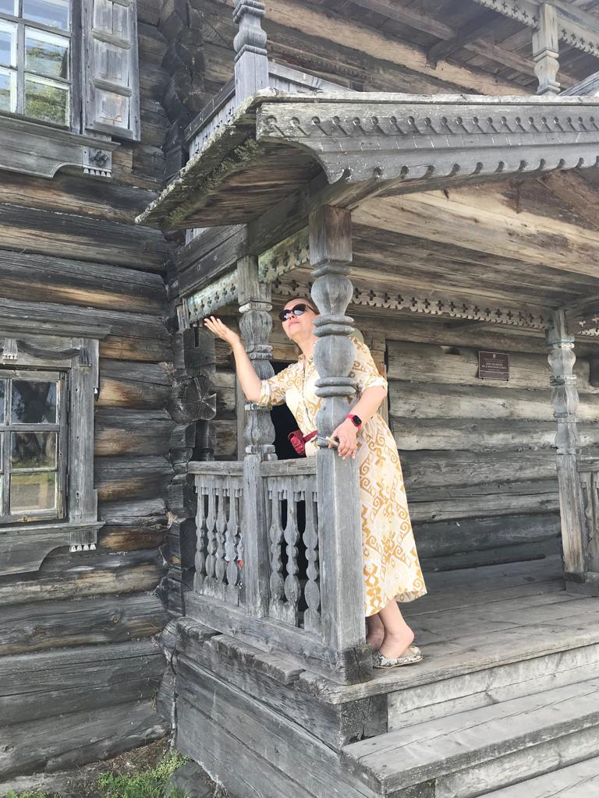
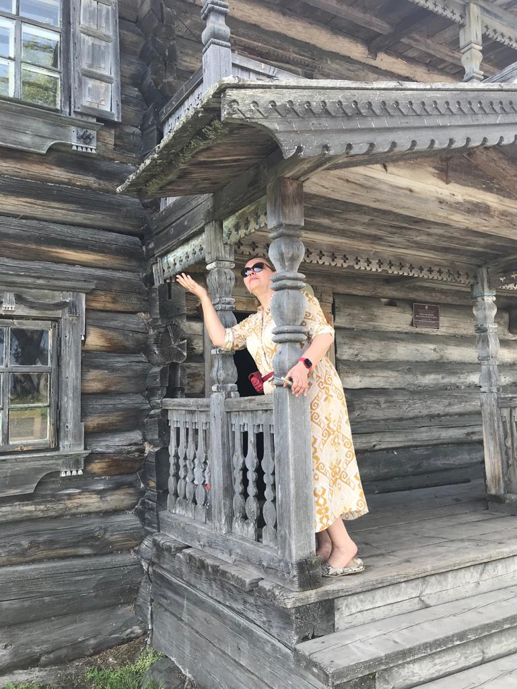

Пленэр
Добро пожаловать на нашу яркую страницу, посвящённую пленэру! Здесь вы можете насладиться красотой природы, вдохновиться атмосферой творчества и открыть для себя мир живописи на свежем воздухе.
Пленэр Кижи


 



Поездка в Кижи в августе — это незабываемое погружение в атмосферу северной природы и древнего русского зодчества. Летний пленэр на острове начинается с мягкого света утреннего солнца, отражающегося в гладкой поверхности Онежского озера. Погода в этом месяце особенно благоприятна: тёплое солнце, лёгкий ветерок и ясное небо создают идеальные условия как для творчества, так и для неспешных прогулок. Кижи наполнены жизнью — туристов много, но каждый находит своё пространство: кто-то разглядывает замысловатые купола Преображенской церкви, кто-то делает наброски с натуры, сидя у берега, а кто-то просто вдыхает аромат сенокоса и свежей древесины. Великолепные виды открываются в каждом направлении — густая зелень острова, деревянные дома с резными наличниками, открытые пространства воды и неба. Всё это вдохновляет на создание живописных этюдов и зарисовок. Августовский пленэр в Кижах — это не только работа, но и общение с коллегами, единомышленниками, обмен впечатлениями, теплом, творческой энергией. Здесь каждый момент наполнен эстетикой и историей, а красота северной архитектуры и природы остаётся в памяти надолго.